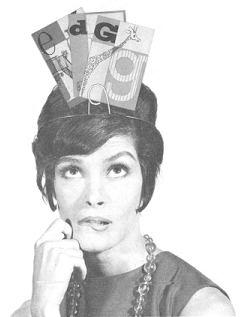
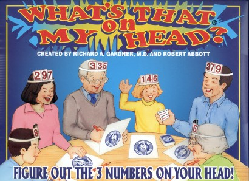

|
Update, June 25, 2007: I just learned that you can still get copies of Richard Gardner’s version of this game. See my update below (in red). | ||
|
What’s That on My Head? is a game of deductive reasoning that was originally published in 1963. The picture at the right was on the box of that original version. There are cards on your head which, of course, you can’t see, but you can see the cards on the other players’ heads. Players draw questions from a set of question cards and they answer these questions about the cards they see. From each answer you get a little information about what is on your head. But the information you get is usually nothing so definite as “I have a D” or “I do not have a G.” You have to work out a way of combining the information you receive until you eventually can say what is on your head. |
 | |
|
Playing this game is not simply learning a logic system and then using it to process the information you receive. It’s a lot more difficult—and a lot more creative. You must develop your own logic system and then use it to process the information you receive. Back in 1963, I actually thought that a complex game like this could be popular. It shows how clueless I was about what makes a commercial product. I’m still pretty clueless about this, but I’m not as bad as I used to be. Actually, a lot of people enjoyed playing the game; it looked like a fun game; and Games Research, a small company in Boston, was happy to publish the game. But it only lasted about a year on the market. (By the way, if you try to find a copy of the original version, I doubt that you’ll have any luck. I have only one copy myself.) What’s That on My Head? remained forgotten since 1963, and it probably would have always remained forgotten, if Richard Gardner, a psychiatrist, lecturer, and game inventor, had not decided to create a revised version. His version has different levels that allow the game to be played by just about everyone. There are easy levels that children as young as seven can play, but there are also higher levels that retain the complexity of my original game. Gardner implemented these levels by simply having four questions on each question card. If you’re playing the easy version of the game, you answer the question marked as level 1. If you’re playing the most complex version, you answer the question marked level 4. The box for Gardner’s version is shown below. Note that the cards on your head now have numbers instead of letters.
 Richard Gardner’s company, Creative Therapeutics, has previously published games to be used for therapy and for exploring family dynamics. What’s That on My Head? is their first game purely for entertainment.
Update: Richard Gardner died in 2003 and Creative Therapeutics is no more. The McNatt Learning Center of Ottawa, Illinois, purchased the remaining stock of What’s That on My Head, and they are selling the game for $35. You can order a copy by calling them at
Now, back to my original write-up . . .
|
|
Gardner asked me if I would write my own reminisces about the creation of the original game. So there is also a section of reminiscences by Abbott. That section has a really sappy picture of me from 1960. Here is a (very complex) puzzle for the game: | |
| Ann: Bill: Charlie: You: |
2 4 8 4 5 8 1 5 5 ? ? ? |
|
(The number cards range from 1 through 9.)
Bill picks this question card: “Of the four even numbers, how many different even numbers do you see?” He answers that he sees all of the even numbers. At this point Ann says she knows what she has, and indeed she is correct. From previous games you know Ann to be a good logician, and you know she doesn’t guess unless she is sure of what she has. Therefore, what is on your own head? | |